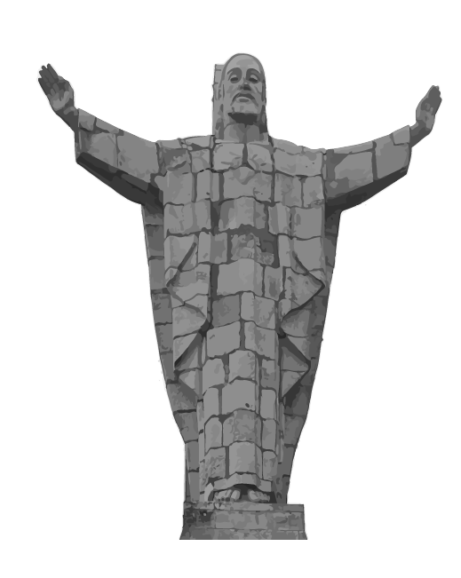

Vídeo del Monte Naranco que ofrece una vista panorámica de 360º desde el punto de grabación.
Vídeo del Monte Naranco con vista en 360º
Monumento del Sagrado Corazón de Jesús
 El Cristo del Naranco
La escultura, hecha en piedra, es obra de Gerardo Zaragoza y Rafael
Rodríguez Urrusti.
El proyecto se inició en 1963 y no sería hasta el 5 de julio de 1981 cuando se llevó
a cabo su inauguración.
Jesús abraza y protege simbólicamente la ciudad de Oviedo.
Está ubicado en el
Picu Paisano.
.png) 30 Metros de altura
30 Metros de alturaLa escultura hecha en piedra tiene una
altura de 30 metros, lo que la convierte en
una de las figuras más imponentes de la
región. La Cruz de la Victoria, encastrada
en el pedestal, mide 5 metros de altura
y es obra de Rafael Rodríguez Urrusti.
El proyecto se inició en 1963 y no se inauguró hasta el 5 de julio de 1981. El presupuesto para realizar la obra fue de 17 millones de pesetas.
MAJESTUOSA ESCULTURA La escultura hecha en piedra tiene una altura de 30 metros, lo que la convierte en una de las figuras más imponentes de la región. La Cruz de la Victoria La Cruz de la Victoria, figura encastrada en el pedestal, mide 5 metros de altura mide 5 metros de altura y es obra de Rafael Rodríguez Urrusti.
El proyecto se inició en 1963 y no sería hasta el 5 de julio de 1981 cuando se llevó a cabo su inauguración. El presupuesto para realizar la obra no fue pequeño: 17 millones de pesetas de aquellos tiempos.
.png) Emblema cultural y turístico
Emblema cultural y turístico
Situado en el monte Naranco, a unos 634 metros sobre el nivel del mar, el monumento ofrece unas vistas panorámicas impresionantes de Oviedo y sus alrededores. En días despejados, se puede ver gran parte de la región de Asturias desde este punto.
El Cristo del Naranco es un emblema cultural y turístico de Oviedo. Representa la protección divina sobre la ciudad y sus habitantes. La estatua está orientada hacia el sur, mirando hacia la ciudad, lo que simboliza la vigilancia y el cuidado.
 Emblema cultural y turístico
Emblema cultural y turístico
Situado en el monte Naranco, a unos 634 metros sobre el nivel del mar, el monumento ofrece unas vistas panorámicas impresionantes de Oviedo y sus alrededores. En días despejados, se puede ver gran parte de la región de Asturias desde este punto.
El Cristo del Naranco es un emblema cultural y turístico de Oviedo. Representa la protección divina sobre la ciudad y sus habitantes. La estatua está orientada hacia el sur, mirando hacia la ciudad, lo que simboliza la vigilancia y el cuidado.
.png) SURGE LA IDEA
SURGE LA IDEA
Hacia mediados del siglo pasado, surgió la idea de levantar en el Monte Naranco de Oviedo una figura de Cristo similar a la de Río de Janeiro. Debido a diversas dificultades, la obra se prolongó durante varias décadas.
Para financiar la construcción, se lanzó una campaña de recaudación de fondos que involucró a toda la comunidad. Se organizaron eventos benéficos, colectas y donaciones privadas, lo que permitió reunir los fondos necesarios.
.png) PATRIMONIO
PATRIMONIO
La estatua está iluminada por la noche, lo que la hace visible desde muchos puntos de Oviedo y sus alrededores. Esta iluminación resalta su majestuosidad, los detalles de la estatua y el pedestal, creando una atmósfera solemne y serena.
La estatua y su entorno están protegidos como parte del patrimonio cultural de Asturias. Esto asegura su conservación y mantenimiento para futuras generaciones. La Cruz de la Victoria es un símbolo histórico de Asturias.
Explora las Otras Zonas Verdes de Oviedo

Descubre tu refugio natural en Oviedo, explora los diversos oasis y remansos de paz que la ciudad tiene para ofrecer.
Al igual que en los parques, en estas zonas verdes podrás encontrar Naturaleza | Deporte | Bienestar.

 Colocan la primera piedra
Colocan la primera piedraLa primera piedra del Sagrado Corazón se colocó el 21 de junio de 1963. Era una roca extraída del Santuario de Covadonga lo que añade un profundo valor simbólico al monumento. Este evento marcó el inicio de la construcción del monumento del Sagrado Corazón de Jesús.

 Bajo ella
Bajo ellaBajo la primera piedra se colocaron bolsas con tierra bendecida de todos los municipios asturianos. Este gesto simbolizaba la unión y la identidad de toda la región, representando la conexión de cada rincón de Asturias con el monumento.
El Monte Naranco, situado en la zona alta de Oviedo, es un majestuoso mirador que ofrece impresionantes vistas de la ciudad y sus alrededores. Este emblemático monte no solo es conocido por su belleza natural, sino también por albergar monumentos prerrománicos de gran importancia, como la iglesia de Santa María del Naranco y la de San Miguel de Lillo, ambos Patrimonio de la Humanidad.
En nuestro video, te invitamos a subir al Cristo y experimentar la sensación de estar en lo alto de Oviedo, con el aire fresco y una panorámica que abarca desde el núcleo urbano hasta las montañas y el mar en el horizonte. A través de imágenes llenas de emoción, mostramos cómo este lugar une la paz del entorno natural con la grandeza de su significado histórico y cultural. Una visita al Cristo es una experiencia inolvidable que conecta a todos con la esencia de Oviedo y su espíritu acogedor.
Sobre Nosotros
Somos un equipo de desarrolladores web dedicados a crear experiencias únicas.
Nos
esforzamos por transformar la visita a los parques por excelencia de Oviedo en experiencias
digitales visualmente atractivas, intuitivas y fáciles de usar.
© Copyright 2025.
Todos los derechos reservados.